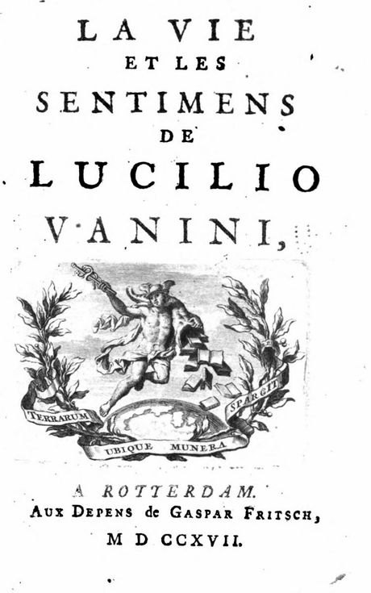
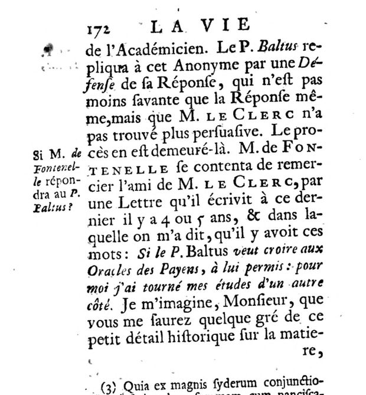

Van Dale, Fontenelle and Baltus: the oracles taken from the demons (pp. 169–172)

French: Rotterdam 1717, pp. 169–172, scans n208–n211. Abridged. Highlighted: what Lecky reports.

[p. 169] The first Christians, though well enough informed of the arguments of Epicurus and Cicero, preferred, without examining the source too closely, to attribute all these oracles to demons rather than to the imposture of priests, so as to have occasion to extol the power of the name of Jesus Christ and of his Gospel, which established itself everywhere at the expense of the empire of the Evil Spirit …
[p. 170] M. van Dale, physician of Haarlem and Anabaptist, was the first among the moderns who dared to break the ice and, in a treatise on purpose, take from the demons the oracles they had peacefully enjoyed for the whole duration of Christianity … M. de Fontenelle found it so full of fine research and good reasons that he did not disdain to reshape it and embellish it in our language, in his History of Oracles …
[p. 171] Yet Father Baltus, a Jesuit of Strasbourg, was not daunted by so long a reputation. Full of the writings of the Fathers, he could not bear that anyone should attack an opinion found in all their books, where it appears as the triumph of the Christian faith. So he addressed to M. de Fontenelle himself a Reply to the History of Oracles … M. de Fontenelle, busy with his History of the Royal Academy, did not see fit to interrupt the study of nature … to examine the arguments and texts of the Jesuit, who wanted to lead him back into a country whose thorns had put him off.
[p. 172] … M. de Fontenelle contented himself with thanking M. Le Clerc’s friend [who had answered Baltus] in a letter he wrote to Le Clerc four or five years ago, in which, I am told, were these words: If Father Baltus wants to believe in the oracles of the pagans, he is welcome; as for me, I have turned my studies elsewhere.
Original French
[p. 169] Les premiers Chrétiens, quoique suffisamment instruits des raisons d’Epicure et de Ciceron, sans en examiner trop la source, aimèrent mieux néanmoins attribuer tous ces oracles aux Démons, qu’à l’imposture des Prêtres, pour avoir occasion de relever la vertu du nom de J. Christ et de son Evangile, qui s’établit par tout aux dépens de l’Empire du Malin Esprit …
[p. 170] M. van Dale, Medecin de Haerlem et Anabaptiste, a été le premier entre les modernes, qui ait osé rompre la glace, et par un Traité exprès, enlever aux Démons, des Oracles dont ils avoient joui paisiblement pendant la durée du Christianisme … M. de Fontenelle le trouva si plein de belles Recherches et de bonnes raisons, qu’il ne dédaigna pas de le réformer et de l’embellir en notre Langue, dans son Histoire des Oracles …
[p. 171] Cependant le P. Baltus, Jesuite de Strasbourg, ne s’est point étonné d’une si longue réputation. Tout plein des Ecrits des Peres, il n’a pû souffrir qu’on ait attaqué un sentiment qui se trouve dans tous leurs Livres et qui y paroit comme le Triomphe de la foi Chrétienne. Il a donc adressé à M. de Fontenelle lui-même une Réponse à l’Histoire des Oracles … M. de Fontenelle, occupé de son Histoire de l’Academie Royale, n’a pas trouvé à propos d’interrompre l’étude de la Nature … pour examiner les raisons et les passages du Jesuite, qui vouloit le ramener dans un païs dont les Epines l’avoient rebutté.
[p. 172] … M. de Fontenelle se contenta de remercier l’ami de M. le Clerc, par une Lettre qu’il écrivit à ce dernier il y a 4 ou 5 ans, et dans laquelle on m’a dit, qu’il y avoit ces mots: Si le P. Baltus veut croire aux Oracles des Payens, à lui permis: pour moi j’ai tourné mes études d’un autre côté.
Durand reports Fontenelle’s letter at second hand (“on m’a dit”, “I am told”). According to Wikipedia, Van Dale’s treatise on the oracles is De oraculis veterum ethnicorum dissertationes (1683); Lecky names instead his De origine et progressu idololatriae.
Further down the rabbit hole
Sources that Lecky cites in the notes next to the ones that cite this page.
- La Peyrère, Men before AdamWho did Abel guard his sheep against? A 1655 case for people before Adam
- Agobard, Liber de imaginibusLecky’s five Agobard quotes checked against Baluze
- Aquinas, Summa theologiae, Supplement, q. 94Lecky’s quotation that is really a paraphrase
- Augustine, De TrinitateNobody knows what Christ looked like
- Augustine, De civitate DeiSeventy reports, not miracles, and a town, not a province
- Augustine, De natura et gratiaLecky’s three tiny changes to Augustine’s exception


Backlinks
Every place in Rationalism in Europe that links to this page (generated automatically when the site is built).